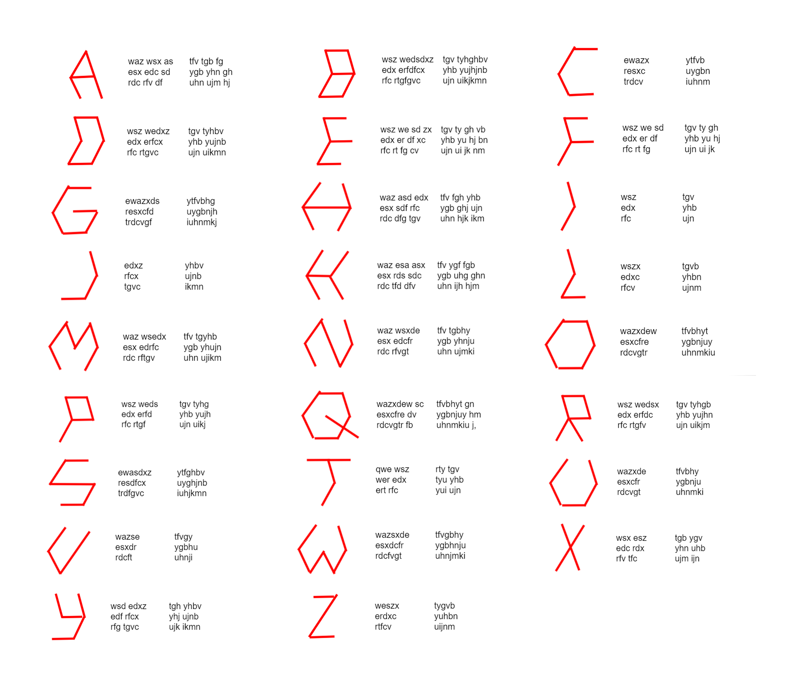

about the alphabet
click to advance; use left arrow button to move back
about the game
The alphabet created above is a complete upheaval of the language that we are familiar with.
Not only is one letter represented by a sequence of multiple keys on the keyboard, there are also multiple unique representations of the same letter.
Thinking about how fast a person can learn to type with this new system leads us to the questions:
How do we learn to type?
Is it just muscle memory, or are we consciously aware of the locations of the letters?
Does the visual nature of this language make it easier to learn and retain than traditional typing?
alphabet reference
